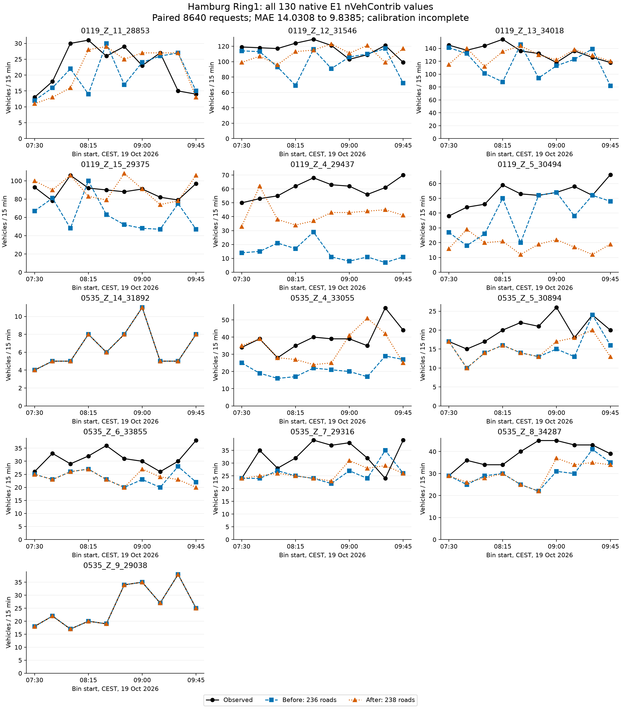
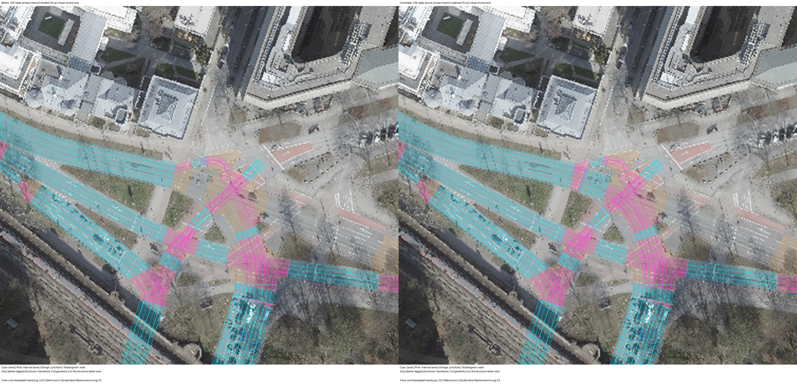

相同8640辆请求、出发时间及真实观测。只恢复源中两条Alsterglacis主路、必要连接和源控制，2589辆在检测点后的尾段改走主路。
| 指标 | 修前 | 修后 |
|---|---|---|
| 130项原生E1计数MAE | 14.030769 | 9.838462 |
| 最大绝对误差 | 66 | 47 |
| 40项派生站点MAE | 43.700 | 27.575 |
| 14400秒等待进入 | 744 | 178 |
| 14400秒在途 | 310 | 227 |
| 碰撞 / 传送 / 丢弃 | 0 / 0 / 0 | 0 / 0 / 0 |
阶段目标已达到；MAE仍不为零，运行仍有积压，不能称为有效标定。主路分流比例属于先验，现场SPaT未确认。保留LSA535缺绿灯及紧急制动警告。
整体改善伴随字段损失：119的Z5主窗绝对误差之和从137增至335，全部损失均保留在图表中。原生日志共28条警告：18条无控制检测器、3条未用信号状态、2条缺少绿灯、5次紧急制动。零碰撞不能替代现场安全或控制核对。
旧README的40项进入记录去重计数已经归零，属于不同日期和计数定义，不能替代本页130项原生计数。
每点是一项15分钟计数，不作平滑、不填零。各字段纵轴独立，均从零起。站点值是字段求和，不是独立证据。

青色为车道，粉色为内部连接。左为236道路，右为恢复两条主路后的238道路。图像审查状态为review_required。

航片：Freie und Hansestadt Hamburg, LGV；Datenlizenz Deutschland Namensnennung 2.0。图像不证明现场几何或控制对应。
| 字段 | CEST起点 | 真实 | 修前 | 修后 | 修后−真实 |
|---|---|---|---|---|---|
| hh_0119_Z_11_28853 | 07:30 | 13 | 12 | 11 | -2 |
| hh_0119_Z_12_31546 | 07:30 | 119 | 114 | 99 | -20 |
| hh_0119_Z_13_34018 | 07:30 | 145 | 141 | 115 | -30 |
| hh_0119_Z_15_29375 | 07:30 | 93 | 67 | 100 | 7 |
| hh_0119_Z_4_29437 | 07:30 | 50 | 14 | 33 | -17 |
| hh_0119_Z_5_30494 | 07:30 | 38 | 27 | 16 | -22 |
| hh_0535_Z_14_31892 | 07:30 | 4 | 4 | 4 | 0 |
| hh_0535_Z_4_33055 | 07:30 | 34 | 25 | 35 | 1 |
| hh_0535_Z_5_30894 | 07:30 | 17 | 17 | 17 | 0 |
| hh_0535_Z_6_33855 | 07:30 | 26 | 25 | 25 | -1 |
| hh_0535_Z_7_29316 | 07:30 | 24 | 24 | 24 | 0 |
| hh_0535_Z_8_34287 | 07:30 | 29 | 29 | 29 | 0 |
| hh_0535_Z_9_29038 | 07:30 | 18 | 18 | 18 | 0 |
| hh_0119_Z_11_28853 | 07:45 | 18 | 16 | 13 | -5 |
| hh_0119_Z_12_31546 | 07:45 | 118 | 113 | 107 | -11 |
| hh_0119_Z_13_34018 | 07:45 | 137 | 132 | 140 | 3 |
| hh_0119_Z_15_29375 | 07:45 | 78 | 81 | 90 | 12 |
| hh_0119_Z_4_29437 | 07:45 | 53 | 15 | 62 | 9 |
| hh_0119_Z_5_30494 | 07:45 | 44 | 18 | 29 | -15 |
| hh_0535_Z_14_31892 | 07:45 | 5 | 5 | 5 | 0 |
| hh_0535_Z_4_33055 | 07:45 | 39 | 19 | 39 | 0 |
| hh_0535_Z_5_30894 | 07:45 | 15 | 10 | 10 | -5 |
| hh_0535_Z_6_33855 | 07:45 | 33 | 23 | 23 | -10 |
| hh_0535_Z_7_29316 | 07:45 | 35 | 24 | 25 | -10 |
| hh_0535_Z_8_34287 | 07:45 | 36 | 25 | 26 | -10 |
| hh_0535_Z_9_29038 | 07:45 | 22 | 22 | 22 | 0 |
| hh_0119_Z_11_28853 | 08:00 | 30 | 22 | 16 | -14 |
| hh_0119_Z_12_31546 | 08:00 | 117 | 93 | 96 | -21 |
| hh_0119_Z_13_34018 | 08:00 | 144 | 101 | 112 | -32 |
| hh_0119_Z_15_29375 | 08:00 | 106 | 48 | 106 | 0 |
| hh_0119_Z_4_29437 | 08:00 | 55 | 21 | 38 | -17 |
| hh_0119_Z_5_30494 | 08:00 | 46 | 26 | 20 | -26 |
| hh_0535_Z_14_31892 | 08:00 | 5 | 5 | 5 | 0 |
| hh_0535_Z_4_33055 | 08:00 | 28 | 16 | 28 | 0 |
| hh_0535_Z_5_30894 | 08:00 | 17 | 14 | 14 | -3 |
| hh_0535_Z_6_33855 | 08:00 | 29 | 26 | 26 | -3 |
| hh_0535_Z_7_29316 | 08:00 | 28 | 27 | 26 | -2 |
| hh_0535_Z_8_34287 | 08:00 | 34 | 29 | 28 | -6 |
| hh_0535_Z_9_29038 | 08:00 | 17 | 17 | 17 | 0 |
| hh_0119_Z_11_28853 | 08:15 | 31 | 14 | 28 | -3 |
| hh_0119_Z_12_31546 | 08:15 | 124 | 69 | 113 | -11 |
| hh_0119_Z_13_34018 | 08:15 | 154 | 88 | 135 | -19 |
| hh_0119_Z_15_29375 | 08:15 | 92 | 100 | 83 | -9 |
| hh_0119_Z_4_29437 | 08:15 | 62 | 17 | 34 | -28 |
| hh_0119_Z_5_30494 | 08:15 | 59 | 50 | 21 | -38 |
| hh_0535_Z_14_31892 | 08:15 | 8 | 8 | 8 | 0 |
| hh_0535_Z_4_33055 | 08:15 | 35 | 17 | 27 | -8 |
| hh_0535_Z_5_30894 | 08:15 | 20 | 16 | 16 | -4 |
| hh_0535_Z_6_33855 | 08:15 | 32 | 27 | 27 | -5 |
| hh_0535_Z_7_29316 | 08:15 | 32 | 25 | 25 | -7 |
| hh_0535_Z_8_34287 | 08:15 | 34 | 30 | 30 | -4 |
| hh_0535_Z_9_29038 | 08:15 | 20 | 20 | 20 | 0 |
| hh_0119_Z_11_28853 | 08:30 | 26 | 30 | 29 | 3 |
| hh_0119_Z_12_31546 | 08:30 | 129 | 116 | 115 | -14 |
| hh_0119_Z_13_34018 | 08:30 | 136 | 146 | 144 | 8 |
| hh_0119_Z_15_29375 | 08:30 | 90 | 63 | 79 | -11 |
| hh_0119_Z_4_29437 | 08:30 | 68 | 29 | 37 | -31 |
| hh_0119_Z_5_30494 | 08:30 | 53 | 20 | 12 | -41 |
| hh_0535_Z_14_31892 | 08:30 | 6 | 6 | 6 | 0 |
| hh_0535_Z_4_33055 | 08:30 | 40 | 22 | 24 | -16 |
| hh_0535_Z_5_30894 | 08:30 | 22 | 14 | 14 | -8 |
| hh_0535_Z_6_33855 | 08:30 | 36 | 23 | 23 | -13 |
| hh_0535_Z_7_29316 | 08:30 | 39 | 24 | 24 | -15 |
| hh_0535_Z_8_34287 | 08:30 | 40 | 25 | 25 | -15 |
| hh_0535_Z_9_29038 | 08:30 | 19 | 19 | 19 | 0 |
| hh_0119_Z_11_28853 | 08:45 | 29 | 17 | 25 | -4 |
| hh_0119_Z_12_31546 | 08:45 | 121 | 91 | 123 | 2 |
| hh_0119_Z_13_34018 | 08:45 | 132 | 94 | 130 | -2 |
| hh_0119_Z_15_29375 | 08:45 | 88 | 52 | 108 | 20 |
| hh_0119_Z_4_29437 | 08:45 | 63 | 11 | 43 | -20 |
| hh_0119_Z_5_30494 | 08:45 | 52 | 52 | 19 | -33 |
| hh_0535_Z_14_31892 | 08:45 | 8 | 8 | 8 | 0 |
| hh_0535_Z_4_33055 | 08:45 | 39 | 21 | 25 | -14 |
| hh_0535_Z_5_30894 | 08:45 | 21 | 13 | 13 | -8 |
| hh_0535_Z_6_33855 | 08:45 | 31 | 20 | 20 | -11 |
| hh_0535_Z_7_29316 | 08:45 | 37 | 22 | 23 | -14 |
| hh_0535_Z_8_34287 | 08:45 | 45 | 22 | 22 | -23 |
| hh_0535_Z_9_29038 | 08:45 | 34 | 34 | 34 | 0 |
| hh_0119_Z_11_28853 | 09:00 | 23 | 24 | 27 | 4 |
| hh_0119_Z_12_31546 | 09:00 | 103 | 106 | 111 | 8 |
| hh_0119_Z_13_34018 | 09:00 | 118 | 113 | 122 | 4 |
| hh_0119_Z_15_29375 | 09:00 | 91 | 48 | 91 | 0 |
| hh_0119_Z_4_29437 | 09:00 | 62 | 8 | 43 | -19 |
| hh_0119_Z_5_30494 | 09:00 | 54 | 54 | 22 | -32 |
| hh_0535_Z_14_31892 | 09:00 | 11 | 11 | 11 | 0 |
| hh_0535_Z_4_33055 | 09:00 | 39 | 20 | 41 | 2 |
| hh_0535_Z_5_30894 | 09:00 | 26 | 15 | 17 | -9 |
| hh_0535_Z_6_33855 | 09:00 | 30 | 23 | 27 | -3 |
| hh_0535_Z_7_29316 | 09:00 | 38 | 27 | 31 | -7 |
| hh_0535_Z_8_34287 | 09:00 | 45 | 31 | 37 | -8 |
| hh_0535_Z_9_29038 | 09:00 | 35 | 35 | 35 | 0 |
| hh_0119_Z_11_28853 | 09:15 | 27 | 26 | 27 | 0 |
| hh_0119_Z_12_31546 | 09:15 | 109 | 110 | 121 | 12 |
| hh_0119_Z_13_34018 | 09:15 | 136 | 123 | 138 | 2 |
| hh_0119_Z_15_29375 | 09:15 | 82 | 47 | 74 | -8 |
| hh_0119_Z_4_29437 | 09:15 | 56 | 11 | 44 | -12 |
| hh_0119_Z_5_30494 | 09:15 | 58 | 38 | 17 | -41 |
| hh_0535_Z_14_31892 | 09:15 | 5 | 5 | 5 | 0 |
| hh_0535_Z_4_33055 | 09:15 | 35 | 17 | 51 | 16 |
| hh_0535_Z_5_30894 | 09:15 | 18 | 13 | 18 | 0 |
| hh_0535_Z_6_33855 | 09:15 | 26 | 20 | 24 | -2 |
| hh_0535_Z_7_29316 | 09:15 | 32 | 24 | 28 | -4 |
| hh_0535_Z_8_34287 | 09:15 | 43 | 30 | 34 | -9 |
| hh_0535_Z_9_29038 | 09:15 | 27 | 27 | 27 | 0 |
| hh_0119_Z_11_28853 | 09:30 | 15 | 27 | 27 | 12 |
| hh_0119_Z_12_31546 | 09:30 | 121 | 117 | 99 | -22 |
| hh_0119_Z_13_34018 | 09:30 | 126 | 139 | 129 | 3 |
| hh_0119_Z_15_29375 | 09:30 | 79 | 75 | 78 | -1 |
| hh_0119_Z_4_29437 | 09:30 | 61 | 7 | 45 | -16 |
| hh_0119_Z_5_30494 | 09:30 | 52 | 52 | 12 | -40 |
| hh_0535_Z_14_31892 | 09:30 | 5 | 5 | 5 | 0 |
| hh_0535_Z_4_33055 | 09:30 | 57 | 29 | 42 | -15 |
| hh_0535_Z_5_30894 | 09:30 | 24 | 24 | 20 | -4 |
| hh_0535_Z_6_33855 | 09:30 | 30 | 28 | 23 | -7 |
| hh_0535_Z_7_29316 | 09:30 | 24 | 35 | 29 | 5 |
| hh_0535_Z_8_34287 | 09:30 | 43 | 41 | 35 | -8 |
| hh_0535_Z_9_29038 | 09:30 | 38 | 38 | 38 | 0 |
| hh_0119_Z_11_28853 | 09:45 | 14 | 15 | 13 | -1 |
| hh_0119_Z_12_31546 | 09:45 | 99 | 72 | 117 | 18 |
| hh_0119_Z_13_34018 | 09:45 | 118 | 82 | 120 | 2 |
| hh_0119_Z_15_29375 | 09:45 | 97 | 47 | 106 | 9 |
| hh_0119_Z_4_29437 | 09:45 | 70 | 11 | 41 | -29 |
| hh_0119_Z_5_30494 | 09:45 | 66 | 48 | 19 | -47 |
| hh_0535_Z_14_31892 | 09:45 | 8 | 8 | 8 | 0 |
| hh_0535_Z_4_33055 | 09:45 | 44 | 27 | 25 | -19 |
| hh_0535_Z_5_30894 | 09:45 | 20 | 16 | 13 | -7 |
| hh_0535_Z_6_33855 | 09:45 | 38 | 22 | 20 | -18 |
| hh_0535_Z_7_29316 | 09:45 | 39 | 26 | 26 | -13 |
| hh_0535_Z_8_34287 | 09:45 | 39 | 35 | 34 | -5 |
| hh_0535_Z_9_29038 | 09:45 | 25 | 25 | 25 | 0 |